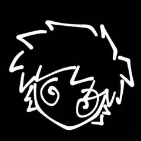
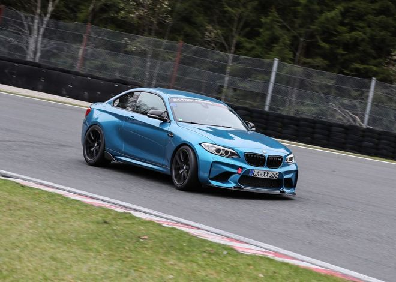
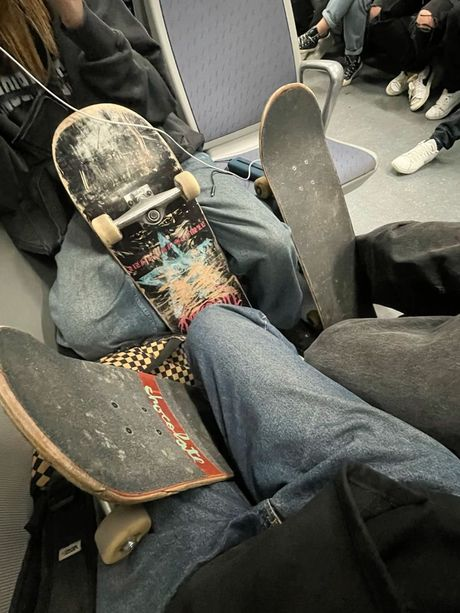
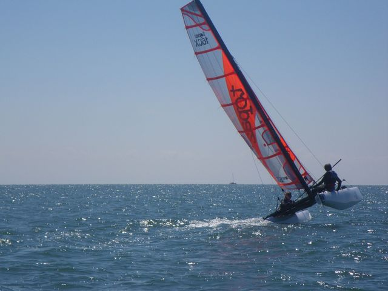

Portfolio Web and desktop development 48.86° N, 2.35° E

I build web and desktop applications. Right now, a virtual audio mixer for Windows.
First-year student at Epitech Paris, in the Programme Grande École (PGE). I also co-own mush.rip, a link-in-bio platform, where I look after product and operations.
Available for an internship, freelance work or a collaboration
00now
WaveDeck in development
A modular virtual mixing desk for Windows, my own take on Voicemeeter.
A central audio engine runs on the main device, which acts as the master clock. Channel strips stack on top of it, additional input and output devices are bridged in through ring buffers, and VST3 plugins can be inserted in the signal chain.
- platform
- Windows
- language
- Python
- interface
- PySide6 (Qt)
- audio
- sounddevice (PortAudio)
- plugins
- VST3, hosted with Pedalboard
- code
- not public yet
01projects
-
Link-in-bio platform: one page that brings together a person’s links, social profiles and statistics. A small team builds it; as co-owner, I handle product and operations.
-
Flockocord
Real-time chat application written from scratch: WebSocket messaging, JWT authentication and SQLite storage.
node.js · express · websocket · sqlite · jwt
-
Wingman
A Counter-Strike 2 community and its Discord bot: matchmaking, tournaments and anti-raid protection.
discord.js · sqlite
02skills
- languages
- Python, JavaScript, Bash
- desktop & audio
- PySide6 (Qt), sounddevice (PortAudio), Pedalboard, VST3
- front end
- HTML, CSS, React, technical SEO
- back end
- Node.js, Express, WebSockets, JWT, SQLite, discord.js
- tools
- Git, GitHub, Linux, VS Code
- learning
- C, the Unix environment and memory management, at Epitech
GitHub activity
98 contributions over the last 12 months · @regret-py
03background
- Sept 2026 – present
- Epitech ParisProgramme Grande École (PGE), first year
- 2025 – present
- mush.ripCo-owner, product and operations, remote
- 2026
- Baccalauréat STI2DTechnology track, SIN specialisation (information systems and digital technology)
04off screen
Away from the keyboard: cars, skateboarding and catamaran sailing. And Counter-Strike 2, which is where Wingman comes from.



05contact
For an internship, a freelance project or a question about WaveDeck, email is the best way to reach me.